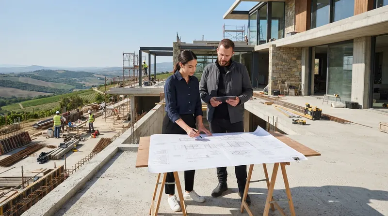
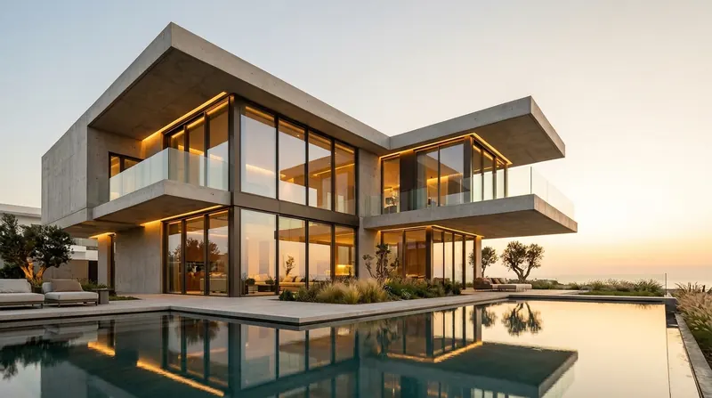

Our Process
From vision to reality.
Five clear steps, from the first conversation to handover.
STEP 01
Consultation & Discover
We begin with a conversation about your site, requirements, budget expectations, timeline and aspirations before any drawing begins.
- Project brief & vision
- Site and terrain analysis
- Zoning & regulatory review
01

STEP 02
Concept Design & Understand
We review all site insights and clarify functional priorities. Early sketches and massing studies shape form, light and spatial flow.
- Concept sketches
- Massing models & zoning
- Material palette curation
02

STEP 03
Planning & Detailed Design
Detailed construction blueprints and coordinated technical specifications align structure, building services and MEP engineering.
- Comprehensive construction drawings
- Structural & services coordination
- Statutory permit approvals
03

STEP 04
3D Visualisation & Development
Hyper-realistic CGI renders, lighting studies and immersive walkthroughs bring the envisioned spaces alive before breaking ground.
- Photorealistic 3D renders
- Virtual spatial walkthrough
- Physical material samples
04

STEP 05
Project Delivery & Realisation
Rigorous on-site architectural supervision and quality audits ensure precision craftsmanship all the way through to final handover.
- Periodic site audits
- Contractor quality checks
- Defect-free handover & commissioning
05